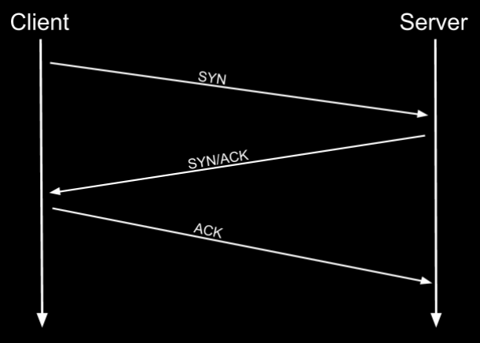

protocols
TCP
TCP (Transmission Control Protocol) is when two computers make an established connection making sure that no data is lost. TCP prefers accuracy of data over speed of the data.
3 way handshake
The 3 way handhsake is a proccess used to establish connections in the TCP protocol
SYN
The client initiates the connection by sending a TCP segment with the SYN (synchronize) flag set to the server. This segment includes a randomly generated initial sequence number (ISN) that the client will use to track the data it sends. Think of this as the client saying, "Hello, I want to start a conversation, my starting number is X."
SYN/ACK
The server responds with a SYN/ACK (synchronize-acknowledge) packet, acknowledging the client's request and replying "Yes, I'm here, and I'm ready to talk too."
ACK
The client sends an ACK (acknowledge) packet back to the server, confirming that it received the server's response and completing the connection establishment.
UDP
UDP (User Datagram Protocol) is when data is thrown at the receiving computer, possibly losing data at some times. UDP prefers speed of data over the accuracy of the data.
IP
Internet Protocol
IP is used to communicate across networks, not just across physical links, but between networks of routers. The addressing scheme in use is either IPv4 ("IP Version 4") or IPv6 ("IP Version 6").